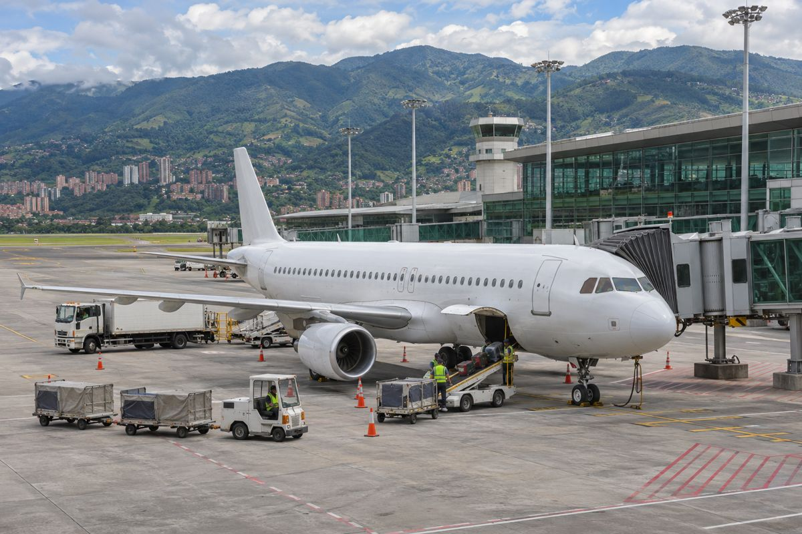

노선 / EXPLAINED
쿠알라룸푸르–프랑크푸르트 직항, 이른 아침 도착이 연결하는 여행
루프트한자가 주 5회로 운항을 시작했다. 야간 출발과 다음 날 아침 도착이라는 시간표를 여행자의 관점에서 읽었다.

쿠알라룸푸르에서 늦은 밤 출발해 다음 날 아침 프랑크푸르트에 도착하는 길이 열렸다. 루프트한자는 10월 26일 두 도시를 잇는 직항편 운항을 시작했다고 발표했다. 초기 운항은 주 5회이며, Allegris 객실을 갖춘 287석 규모의 보잉 787-9를 사용한다.
아침 도착은 다음 이동을 결정한다
발표 시간표에서 쿠알라룸푸르발 LH705는 오후 11시 55분 출발, 다음 날 오전 6시 프랑크푸르트 도착이다. 반대 방향 LH704는 프랑크푸르트에서 오후 9시 30분 출발해 다음 날 오후 4시 40분에 도착한다. 모두 해당 공항의 현지 시각이므로 숫자만 빼서 비행시간을 계산하면 시차를 놓치게 된다.
이른 아침 도착은 유럽 내 후속 항공편이나 지상 교통을 연결하기에 유용한 시간대가 될 수 있다. 다만 ‘오전 도착’이 곧 충분한 환승 시간을 뜻하지는 않는다. 입국심사와 터미널 이동, 수하물 처리, 다음 교통편의 변경 조건까지 함께 따져야 한다.
직항 한 구간과 전체 여정의 차이
말레이시아에서 출발하는 승객에게는 유럽행 직항 선택지가 늘어난다. 반면 한국에서 쿠알라룸푸르를 거쳐 유럽으로 향하려는 경우에는 출발지에서 말레이시아까지의 구간이 추가된다. 한 구간의 새 직항편이 전체 여행의 최단 경로가 되는 것은 아니므로 총 소요시간과 운임을 비교해야 한다.
주 5회라는 초기 빈도도 여행일 선택에 영향을 준다. 매일 운항을 전제로 숙박과 이동 일정을 먼저 확정하면 원하는 날에 편이 없을 수 있다. 실제 판매 달력과 귀국편 조합부터 보는 편이 안전하다.
787-9와 새 객실은 장거리 경험을 예상하는 단서다. 그러나 항공권의 가치는 기체만으로 정해지지 않는다. 필요한 날짜에 운항하는지, 도착 뒤 일정이 무리 없이 이어지는지, 변경 시 비용이 어느 정도인지가 함께 맞아야 새 노선의 편리함을 누릴 수 있다.